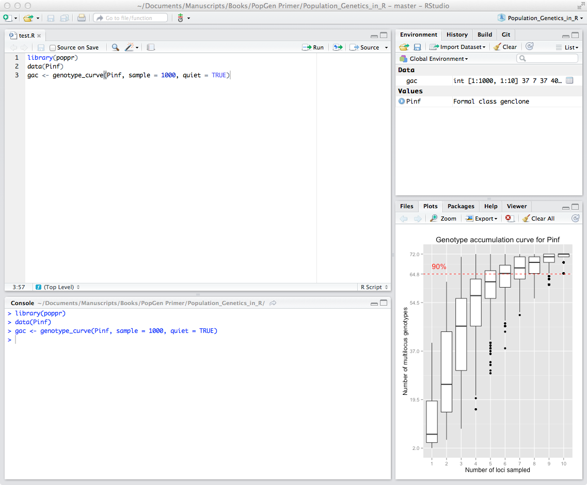

This appendix introduces basic use of the R statistical and computer language and the Rstudio graphics user interface. We assume you installed the needed resources mentioned in chapter 2 on getting ready to use R.
After installing both R and R studio, please proceed to open R studio. R studio should look something like:

The top left panel is a text-box where you can write a script. The bottom left panel is the console (or command line) where you directly execute commands and R writes results to the console; for example, type in x <- 1 hit return and then type x and hit return again and watch the console:
x <- 1
x## [1] 1You just assigned the value 1 to the variable x with the assignment operator \(<-\). The second command asks R to show the value assigned to R. Finally, the top right panel shows variables loaded into the environment and the bottom right panel is useful for loading files, plotting graphs, installing packages and getting help. Feel free to explore all the various tabs or elements of each panel.
Let’s learn a few simple facts about R:
R uses # to add comments to code:
# Add 1 + 1 and write to console
1 + 1## [1] 2This is very useful when developing reusable code or when you want to remember a few months later what you actually did.
R is case sensitive so that x <- 5 is not the same as X <- x + 1. Try typing this into your console and look at x and X, respectively:
x <- 5
X <- x + 1
x## [1] 5X## [1] 6Next, let’s assign numbers to a vector:
x <- c(1, 2, 3, 4, 5)
x## [1] 1 2 3 4 5You can see several important traits of R. The c() command (which stands for combine) can be used to make a list (e.g., a vector) of data. We can overwrite the variable x with new content and we can assign another data type (e.g., a single number becomes a vector). To compound things further you can even change the data type to strings overwriting the previous content:
a <- c("Paris", "Tokyo", "Seattle")
a## [1] "Paris" "Tokyo" "Seattle"Note that we use quotes to denote the string data type containing text.
To access individual elements of a vector, in this case the second element, we execute:
a[2]## [1] "Tokyo"R studio has a very useful feature called code completion using the Tab key which can complete the full name of an object. For example type hel and hit Tab and you will see several functions pop up and you can select help().
This also work inside a function to find function arguments. Type help( and hit Tab to select arguments for the help function.
R studio records your command history. Thus you can scroll up or down the history of executed commands using the Up or Down arrows. Make sure your cursor is in the console and try to re-execute previous commands.
To quit R you can either use the Rstudio > Quit pull-down menu command or execute ⌘ + Q (OS X) or ctrl + Q (PC).
One way that R shines above other languages for analysis is the fact that R packages in CRAN are all documented. Help files are written in HTML and give the user a brief overview of:
To see all of the help topics in a package, you can simply type:
help(package = "poppr") # Get help for a package.
help(amova) # Get help for the amova function.
?amova # same as above.
??multilocus # Search for functions that have the keyword multilocus.Some packages include vignettes that can have different formats such as being introductions, tutorials, or reference cards in PDF format. You can look at a list of vignettes in all packages by typing:
browseVignettes() # see vignettes from all packages
browseVignettes(package = 'poppr') # see vignettes from a specific package.and to look at a specific vignette you can type:
vignette('poppr_manual')Next, consider browsing the R tutorial chapter if you are not yet familiar with R and Rstudio. Otherwise, you are now ready to think about formatting and loading population genetic data into R.
Introductory
Advanced
Books: